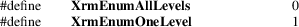

XrmEnumerateDatabase − enumerate resource database entries
|
#include <X11/Xresource.h> |

|
Bool XrmEnumerateDatabase(XrmDatabase database, XrmNameList name_prefix, XrmClassList class_prefix, int mode, Bool (*proc)(), XPointer arg); |
|
database |
Specifies the resource database. |
name_prefix
Specifies the resource name prefix.
class_prefix
Specifies the resource class prefix.
|
mode |
Specifies the number of levels to enumerate. | ||
|
proc |
Specifies the procedure that is to be called for each matching entry. | ||
|
arg |
Specifies the user-supplied argument that will be passed to the procedure. |
The XrmEnumerateDatabase function calls the specified procedure for each resource in the database that would match some completion of the given name/class resource prefix. The order in which resources are found is implementation-dependent. If mode is XrmEnumOneLevel, a resource must match the given name/class prefix with just a single name and class appended. If mode is XrmEnumAllLevels, the resource must match the given name/class prefix with one or more names and classes appended. If the procedure returns True, the enumeration terminates and the function returns True. If the procedure always returns False, all matching resources are enumerated and the function returns False.
The procedure is called with the following arguments:
(*proc)(database,
bindings, quarks, type, value,
arg)
XrmDatabase *database;
XrmBindingList bindings;
XrmQuarkList quarks;
XrmRepresentation *type;
XrmValue *value;
XPointer arg;
The bindings and quarks lists are terminated by NULLQUARK. Note that pointers to the database and type are passed, but these values should not be modified.
The procedure must not modify the database. If Xlib has been initialized for threads, the procedure is called with the database locked and the result of a call by the procedure to any Xlib function using the same database is not defined.
XrmGetResource(3),
XrmInitialize(3), XrmPutResource(3)
Xlib − C Language X Interface